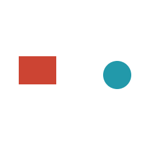
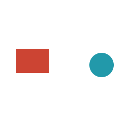
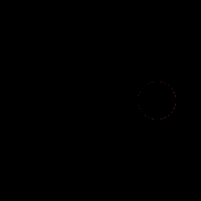
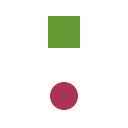
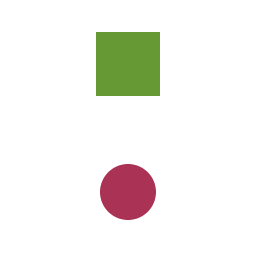
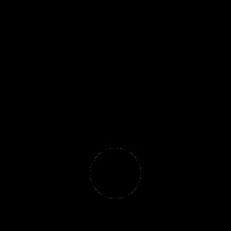
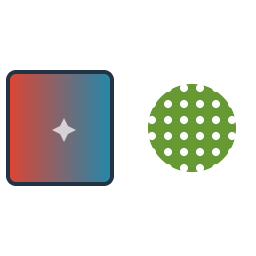
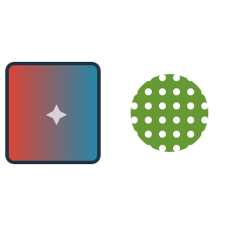
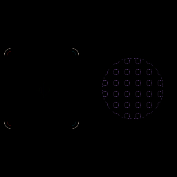

Every pixel of three 256×256 white RGB matrices is compared. Bend uses 4×4 coverage sampling. resvg independently renders at the fitted size, then its matrix is centered on white. The unchanged limits are MAE ≤1, RMSE ≤5, and at most 1% of pixels with a channel error above 32 (channels 0–255).
These are additional navigation checks. The separate 112-fixture conformance gallery retains its 23 failures.
MAE 0.0057 · RMSE 0.2427 · max 27 · 0 pixels above 32



MAE 0.0110 · RMSE 0.3283 · max 13 · 0 pixels above 32



MAE 0.1169 · RMSE 1.4089 · max 42 · 11 pixels above 32


